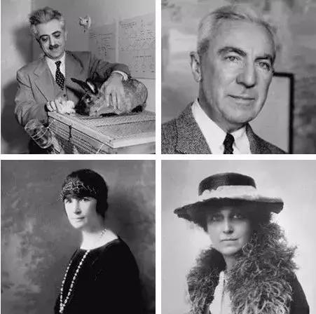

你好，欢迎来到《医学通识50讲》，我是薄世宁。
有病才吃药，这几乎是个常识。但是这节课要讲的药，却是给健康人吃的。
我们知道，人是地球上唯一一种不以繁衍为主要目的，而进行性交的物种。但是，性交又很难和繁衍分割。所以，女性参与性活动的代价远远大于男性。
首先是过度生育问题，这会让女性没办法工作，依附于男性。另外，生产过程有风险，还会带来疾病、死亡、贫穷。随之而来的是，社会负担也会过重。
其次，意外怀孕又带来了堕胎问题和身体伤害问题。
避孕药，就是用医疗的形式解决了这两个问题。它是药的升级，它的主要目的不是治病，而是用药的形式把女人的身体还给女人。
权威期刊《英国医学杂志》（The BMJ）把避孕药评为医学的15个里程碑之一，和抗生素、疫苗、DNA的发现并驾齐驱。
《经济学人》（The Economist）把避孕药看做20世纪最重要的科学进步之一。
在西方，女性通过常规服用口服避孕药来避孕的比例是30%-50%，而在中国，只有2.3%。口服避孕药是被误解最深的药。
让生育和性爱分割
避孕是刚需。在没有避孕药具的年代，人们用了各种“神奇”的招数来避孕。
比如：
这些方法不仅避孕效果不可靠，而且对女性的身体伤害很大。
在20世纪60年代，即便是在避孕药的“娘家”美国，人们也不能谈避孕，谈避孕违法。
当时的人们认为，有了避孕的东西会让人变淫荡，会增加偷情的概率。而且有的信仰认为，避孕违背自然法则。
这才是掩耳盗铃。道德问题和避孕有什么因果关系呢？
但是，就有这么一个草台班子，敢冒天下之大不韪研发避孕药。这个团队有三个人。
第一位，是坚决推广女性避孕的社会改革家——桑格（Margaret Sanger）。她的母亲在怀孕第18次的时候去世，她目睹了反复生育给女人带来的痛苦。桑格负责宣传。
第二位，原本是哈佛大学的天才——平克斯（Gregory Goodwin Pincus）。他给兔子做体外受精，试验成功了，他却被开除了，理由是亵渎生命。平克斯负责动物试验。
第三位，是妇科医生——洛克（John Rock）。他负责临床试验。严格的临床试验，是药品申报必不可少的环节。
这个团队虽然小，但是分工明确。最关键的是，一旦避孕药研发成功，在未来必将产生巨大收益。
收益是什么呢？就是把女人的身体还给女人。
有痛点，有团队，还有巨大的未来收益。这个时候，投资人出现了。是一个非常有钱的女人——凯瑟琳（Kathryn McCormick），她是国际收割机公司的老板娘。
凯瑟琳有钱，但是不幸。她的老公是精神分裂症不适合生育，所以，她也坚定不移地赞成科学避孕。

研发过程很曲折，但是结果成功了。1957年，避孕药通过了全世界药品审批最严格的FDA（美国食品药品监督管理局）。
FDA耍了个小花招。
因为当时的社会不让谈避孕，所以，FDA把这个药审批成治疗月经不调。在药品说明书里注明，副作用是阻止排卵。不排卵不就等于避孕吗？
FDA是在科学的外表下，表达人文。
药一上市，几十万女性来开药，很多人都说自己月经不调。显然，她们是奔着这个药的副作用，也就是避孕来的。
1960年，美国FDA重新把这个药审批成避孕药。
从此，这个充满魔力的小药丸让性爱和生育分割开来，让女人可以自主控制生育。这是人类历史上第一次真正生理意义上的，把女人的身体还给女人。
避孕药不仅是避孕
虽然避孕药可以名正言顺地避孕了，但是，也带来了新的烦恼。
有些女性因为痛经到医院，医生给她们口服避孕药，她们只能偷偷摸摸地吃，就是因为这个药的名字叫“避孕药”。
其实，口服避孕药的作用可不仅仅是避孕，还能治病。
它对于痤疮、功能性子宫出血的治疗效果都很好。有研究表明，对于子宫内膜异位症引起的痛经，口服避孕药缓解疼痛有效率在79.7%。
对于不孕症的病人，口服避孕药甚至可以辅助怀孕。
比如多囊卵巢综合征，就是因为激素水平紊乱导致不孕。
口服避孕药可以调整月经，等到月经调整完毕后，需要怀孕的时候再用其他药物诱发排卵。这样，很多女生就可以成功怀孕了。
口服避孕药还能用于人工控制月经。
在一些特殊时期比如高考、比赛、游泳，这个时候用避孕药人为地控制女性月经，让它错开这几天，过几天再来。
另外，现有研究证据表明，口服避孕药对于减少某些妇科癌症还具有一定作用，长期服用可以让子宫内膜癌的风险降低50%，让卵巢癌的风险降低40%。
而且即使停药后，保护作用还会持续很久。
所以，口服避孕药只用于避孕是不对的，这是对它的第一个误解。
第二个误解，就是认为它是激素，会带来副作用，会让人变胖。
其实，今天说的口服避孕药是雌激素和孕激素的合剂，这和临床上引起发胖的糖皮质激素是两码事。
少数病人在服用早期可能出现轻度水肿和体重增加，但是非常轻微。持续服用，这种作用也就越来越小了。
还有人认为，避孕药会影响要孩子，这就更是误会了。实际上，这个月停药，下个月就可以正常怀孕了。
但是，口服避孕药也有副作用，它最大的副作用是增加了静脉血栓的机会。所以，35岁以上，吸烟或有心脑血管病的女性，不推荐用口服避孕药。
关于避孕药的第三个误解，就是把口服避孕药和紧急避孕药弄混。
有的女性不敢吃口服避孕药，但是却不拒绝紧急避孕药。有药店统计，每年情人节过后，紧急避孕药的销量都会增加50%。
要知道，口服避孕药和紧急避孕药是两码事。
口服避孕药主要是通过抑制排卵，防止怀孕，副作用很小。而紧急避孕药是阻止受精卵着床，副作用远远大于口服避孕药。
口服避孕药让性爱与生育分割，这是让女人能为自己身体做主的关键一步。但是，医学所做的远不止这些。
接下来，就是让女性想生的时候，可以安全地生。
让生育和死亡分割
在以前，生孩子全靠运气。生孩子被看做是女人的一只脚踏进了鬼门关。
为什么这么说呢？
以前没有科学的接生手段，只有一些没有接受过任何医学教育的老人，充当接生婆的角色。
根据统计，在世界范围内，80%的孕产妇死亡是发生在生孩子这个过程中的，主要死因是严重的大出血、感染、妊娠高血压，还有难产。
生育这个过程，给女人的身体甚至生命带来巨大威胁。
比如产妇发生了大出血；或者胎儿头部太大，很难通过产道的时候；再或者胎儿体位异常，胎位不正的时候，多数情况下就是产妇死亡，或者一尸两命。
医学让生孩子的过程，在熟练的医护人员的辅助下进行。具有专业技能的助产士、产科医生、麻醉师，让女性生产的过程变得更安全。
手术可以处理大出血，缝合撕裂的产道，有效止血。
各种助产技术可以在胎位不正的时候辅助生产，危急时刻还可以剖宫产。抗生素和无菌操作，又减少了围产期的感染。
根据统计，建国初期我国孕产妇死亡率是每10万人死亡1500人，在2018年这个数字是每10万人死亡18.3人，大约下降了99%。
医学让生育和死亡分割，让女人想生的时候可以安全地生，这也是一种伟大的进步。
接下来，医学还能让女性想什么时候生，就什么时候生。
让生育和年龄分割
有些女性年轻的时候不想生孩子，想工作，想轰轰烈烈地恋爱，想玩儿，或者想做对她更有意义的事，或者不想和现在的伴侣生。
但是，女性的生育力在35岁以后会迅速下降。如果现在不生，万一哪天后悔了怎么办？
冻卵技术就是一种“后悔药”。这同样是把女性身体的自主权还给了女性。
根据网络报道，苹果、Facebook、携程公司，都相继出台了给女高管报销冻卵费用的政策，还推出带薪年假等措施，目的都是鼓励女性员工先为事业奋斗。
冻卵技术就是把卵子取出来以后，放到保护液里，立刻投入零下196℃的液氮里保存起来。
就像瞬间被封存到了玻璃里面，所以也叫玻璃化冷冻。需要的时候，再取出来复原就可以用了。
当前的医疗技术，还没办法保证冷冻卵子100%能够复原、受孕。而且按照国际惯例，保存期也不超过5年。
美国冻卵受孕成功率最高的机构，是在新泽西州的一家辅助生殖中心，根据那里的数据显示，冻卵复原后成功怀孕的比例，最高可以达到61.3%。前提是必须在35岁之前冷冻，如果超过40岁再冻卵，这个成功比例就会降低到44.6%。
在未来，随着医学的进步，这项技术一定会做到成功率越来越高，安全保存年限越来越长，给更多女性提供更多选择。
下节预告
为什么说所有的科学奖，其实都是医学奖？下节课，我们说说诺贝尔奖。